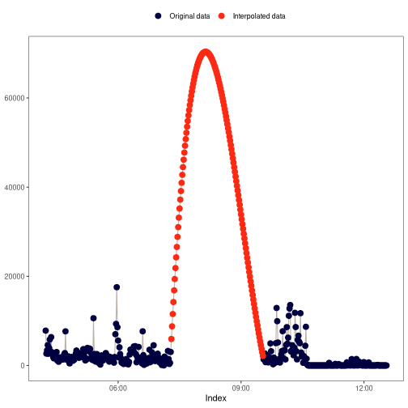
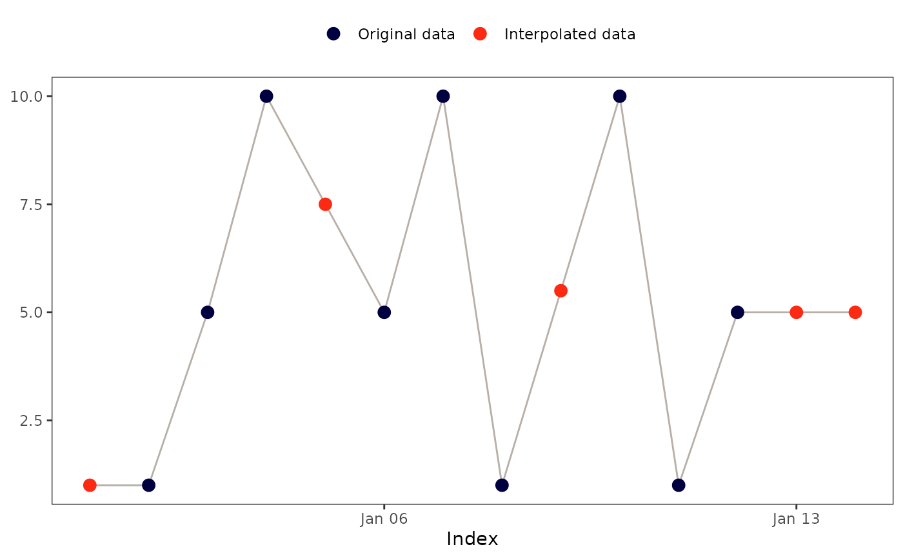
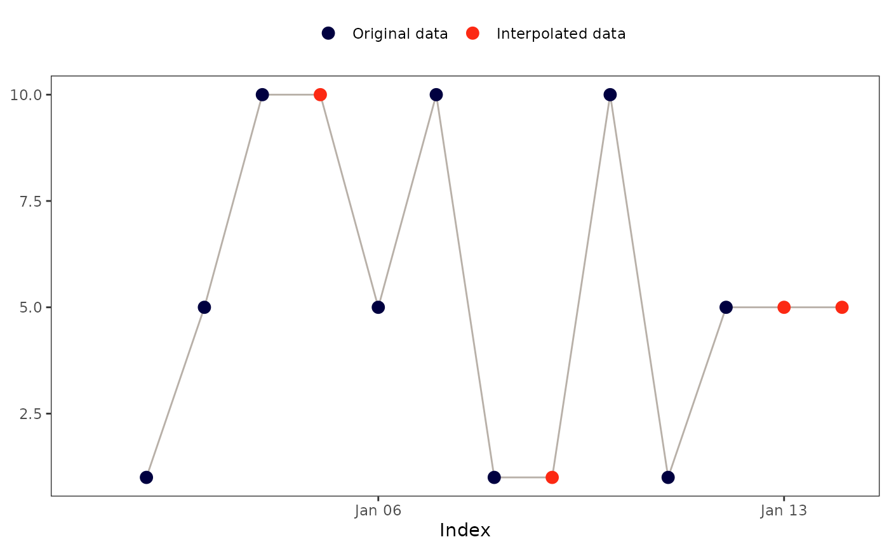
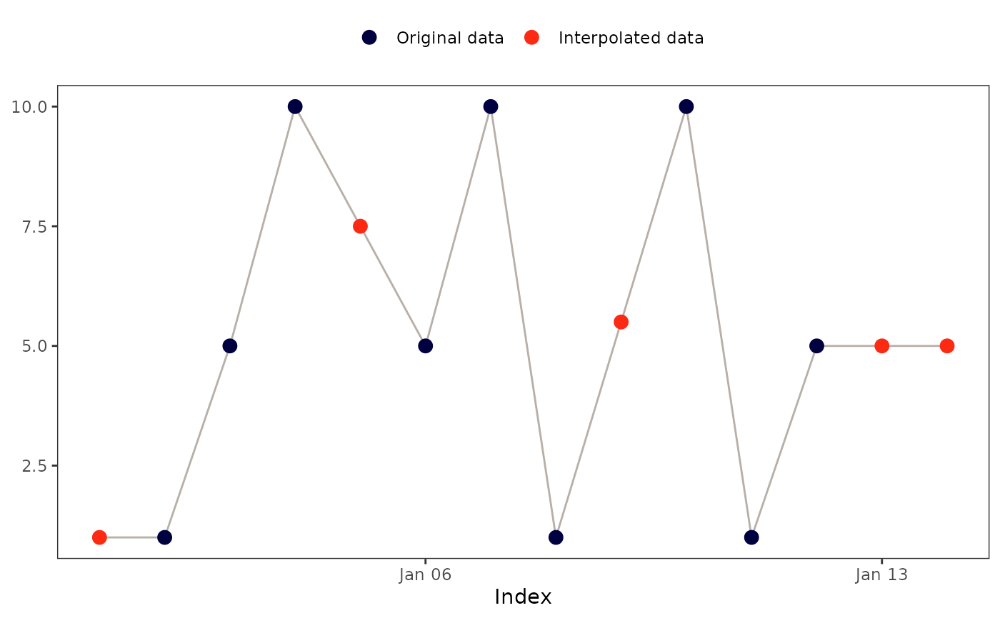
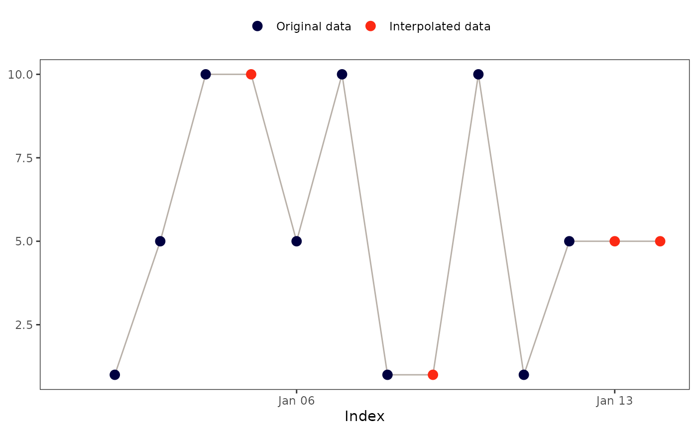
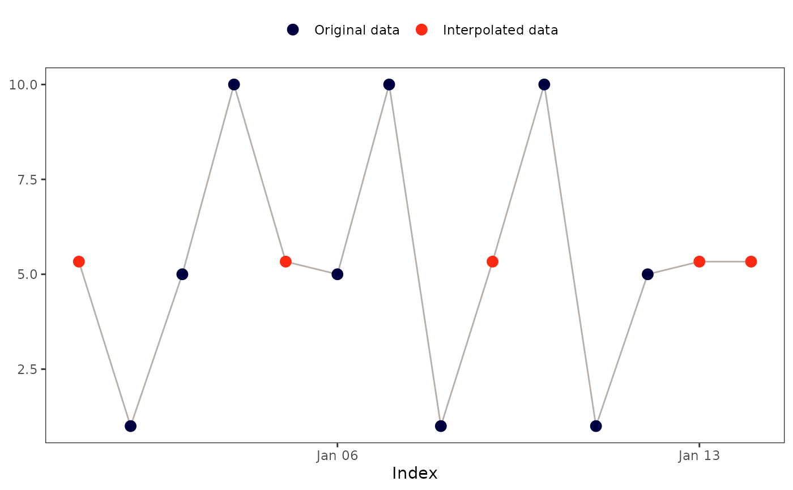
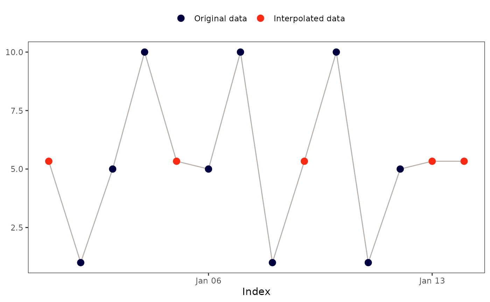

The actverse package offers a suite of functions for handling missing
values through interpolation, all prefixed with na_. Refer to the Methods
section below for details on each available approach.
na_plot() provides a visual comparison of the original and interpolated
data, helping you assess and select the most appropriate interpolation method
for your dataset.
Usage
na_approx(x, index, fill_na_tips = TRUE)
na_locf(x, fill_na_tips = TRUE)
na_overall_mean(x)
na_overall_median(x)
na_overall_mode(x)
na_spline(x, index)
na_weekly_mean(x, index, fill_na_tips = TRUE, week_start = 1)
na_zero(x)
na_plot(x, index, intp = NULL, print = TRUE)Arguments
- x
A
numericvector.- index
An
atomicvector with the same length asxrepresenting the index of a time series.- fill_na_tips
(optional) A
logicalflag indicating if the function must fill remainingNAvalues with the closest non-missing data point. Learn more about it in the Details section (default:TRUE).- week_start
(optional) An integer indicating the day on which the week starts (
1for Monday and7for Sunday) (default:1).- intp
(optional) A
numericvector of the same length asx, containing the interpolated values to be compared with the original data (default:NULL).(optional) A
logicalflag indicating if the function must print the plot (default:TRUE).
Details
Interpolation in actigraphy
Few articles address interpolation methods specifically for actigraphy data.
Tonon et al. (2022) recommend avoiding interpolation—i.e., retaining NA
values—whenever possible. When interpolation is necessary (for example, when
certain analyses cannot be performed with missing values), the authors
suggest using the weekly mean method as the preferred approach.
fill_na_tips argument
Some interpolation methods can result in outputs with remaining NA values.
That is the case, for example, with the linear interpolation method
(na_approx()).
Example:
x <- c(NA, 1, 5, 10, NA, 5, 10, 1, NA, 10, 1, 5, NA, NA)
index <- seq(as.Date("2020-01-01"), as.Date("2020-01-14"), by = "day")
na_approx(x, index, fill_na_tips = FALSE)
#> [1] NA 1.0 5.0 10.0 7.5 5.0 10.0 1.0 5.5 10.0 1.0 5.0 NA NA
By using fill_na_tips == TRUE (default), the function will fill those gaps
with the closest non-missing data point.
Example:
na_approx(x, index, fill_na_tips = TRUE)
#> [1] 1.0 1.0 5.0 10.0 7.5 5.0 10.0 1.0 5.5 10.0 1.0 5.0 5.0 5.0Methods
na_approx(): Linear interpolation
This method fills gaps in x by linearly interpolating between non-missing
values, creating a straight-line "bridge" across missing data points. For
more details, see zoo::na.approx() and stats::approx().
Visual example:

na_locf(): Last observation carried forward
This method replaces NA values with the preceding observation of the NA
block.
Visual example:
na_overall_mean(): Overall mean
This method replaces NA values with the overall mean of x.
Visual example:

na_overall_median(): Overall median
This method replaces NA values with the overall median of x.
Visual example:
na_overall_mode(): Overall mode
This method replaces NA values with the most frequent value (mode) of
x.
If no mode can be found, the function will return x without any
interpolation. na_overall_mode() will show a warning message to inform the
user if that happens.
Visual example:
na_spline(): Cubic spline interpolation
This method uses low-degree polynomials in each of the intervals, and chooses the polynomial pieces such that they fit smoothly together. It can produce extreme values when dealing with large gaps.
See stats::spline() and zoo::na.spline() to learn more on the
spline method.
Visual example:



References
Tonon, A. C. et al. (2022). Handling missing data in rest-activity time series measured by actimetry. Chronobiology International, 39(7). doi:10.1080/07420528.2022.2051714 .
Examples
x <- c(NA, 1, 5, 10, NA, 5, 10, 1, NA, 10, 1, 5, NA, NA)
index <- seq(as.Date("2020-01-01"), as.Date("2020-01-14"), by = "day")
x
#> [1] NA 1 5 10 NA 5 10 1 NA 10 1 5 NA NA
#> [1] NA 1 5 10 NA 5 10 1 NA 10 1 5 NA NA # Expected
na_plot(x, index)
## 'na_approx()': Linear interpolation
na_approx(x, index, fill_na_tips = FALSE)
#> [1] NA 1.0 5.0 10.0 7.5 5.0 10.0 1.0 5.5 10.0 1.0 5.0 NA NA
#> [1] NA 1.0 5.0 10.0 7.5 5.0 10.0 1.0 5.5 10.0 # Expected
#> [11] 1.0 5.0 NA NA
na_plot(x, index, na_approx(x, index, fill_na_tips = FALSE))
 na_approx(x, index, fill_na_tips = TRUE)
#> [1] 1.0 1.0 5.0 10.0 7.5 5.0 10.0 1.0 5.5 10.0 1.0 5.0 5.0 5.0
#> [1] 1.0 1.0 5.0 10.0 7.5 5.0 10.0 1.0 5.5 10.0 # Expected
#> [11] 1.0 5.0 5.0 5.0
na_plot(x, index, na_approx(x, index, fill_na_tips = TRUE))

## 'na_locf()': Last observation carried forward
na_locf(x, fill_na_tips = FALSE)
#> [1] NA 1 5 10 10 5 10 1 1 10 1 5 5 5
#> [1] NA 1 5 10 10 5 10 1 1 10 1 5 5 5 # Expected
na_plot(x, index, na_locf(x, fill_na_tips = FALSE))

na_locf(x, fill_na_tips = TRUE)
#> [1] 1 1 5 10 10 5 10 1 1 10 1 5 5 5
#> [1] 1 1 5 10 10 5 10 1 1 10 1 5 5 5 # Expected
na_plot(x, index, na_locf(x, fill_na_tips = TRUE))
na_approx(x, index, fill_na_tips = TRUE)
#> [1] 1.0 1.0 5.0 10.0 7.5 5.0 10.0 1.0 5.5 10.0 1.0 5.0 5.0 5.0
#> [1] 1.0 1.0 5.0 10.0 7.5 5.0 10.0 1.0 5.5 10.0 # Expected
#> [11] 1.0 5.0 5.0 5.0
na_plot(x, index, na_approx(x, index, fill_na_tips = TRUE))

## 'na_locf()': Last observation carried forward
na_locf(x, fill_na_tips = FALSE)
#> [1] NA 1 5 10 10 5 10 1 1 10 1 5 5 5
#> [1] NA 1 5 10 10 5 10 1 1 10 1 5 5 5 # Expected
na_plot(x, index, na_locf(x, fill_na_tips = FALSE))

na_locf(x, fill_na_tips = TRUE)
#> [1] 1 1 5 10 10 5 10 1 1 10 1 5 5 5
#> [1] 1 1 5 10 10 5 10 1 1 10 1 5 5 5 # Expected
na_plot(x, index, na_locf(x, fill_na_tips = TRUE))
 ## 'na_overall_mean()': Overall mean
na_overall_mean(x)
#> [1] 5.333333 1.000000 5.000000 10.000000 5.333333 5.000000 10.000000
#> [8] 1.000000 5.333333 10.000000 1.000000 5.000000 5.333333 5.333333
#> [1] 5.333333 1.000000 5.000000 10.000000 5.333333 5.000000 10.000000
#> [8] 1.000000 5.333333 10.000000 1.000000 5.000000 5.333333
#> [14] 5.333333 # Expected
mean(x, na.rm = TRUE)
#> [1] 5.333333
#> [1] 5.333333 # Expected
na_plot(x, index, na_overall_mean(x))

## 'na_overall_median()': Overall median
na_overall_median(x)
#> [1] 5 1 5 10 5 5 10 1 5 10 1 5 5 5
#> [1] 5 1 5 10 5 5 10 1 5 10 1 5 5 5 # Expected
stats::median(x, na.rm = TRUE)
#> [1] 5
#> [1] 5 # Expected
na_plot(x, index, na_overall_median(x))
## 'na_overall_mean()': Overall mean
na_overall_mean(x)
#> [1] 5.333333 1.000000 5.000000 10.000000 5.333333 5.000000 10.000000
#> [8] 1.000000 5.333333 10.000000 1.000000 5.000000 5.333333 5.333333
#> [1] 5.333333 1.000000 5.000000 10.000000 5.333333 5.000000 10.000000
#> [8] 1.000000 5.333333 10.000000 1.000000 5.000000 5.333333
#> [14] 5.333333 # Expected
mean(x, na.rm = TRUE)
#> [1] 5.333333
#> [1] 5.333333 # Expected
na_plot(x, index, na_overall_mean(x))

## 'na_overall_median()': Overall median
na_overall_median(x)
#> [1] 5 1 5 10 5 5 10 1 5 10 1 5 5 5
#> [1] 5 1 5 10 5 5 10 1 5 10 1 5 5 5 # Expected
stats::median(x, na.rm = TRUE)
#> [1] 5
#> [1] 5 # Expected
na_plot(x, index, na_overall_median(x))
 ## 'na_overall_mode()': Overall mode
na_overall_mode(x)
#> ! No mode was found. x was not interpolated.
#> [1] NA 1 5 10 NA 5 10 1 NA 10 1 5 NA NA
#> ! No mode was found. x was not interpolated.
#> [1] NA 1 5 10 NA 5 10 1 NA 10 1 5 NA NA # Expected
x2 <- append(x, 1)
index2 <- append(index, as.Date("2020-01-15"))
na_overall_mode(x2)
#> [1] 1 1 5 10 1 5 10 1 1 10 1 5 1 1 1
#> [1] 1 1 5 10 1 5 10 1 1 10 1 5 1 1 1 # Expected
na_plot(x2, index2, na_overall_mode(x2))
## 'na_overall_mode()': Overall mode
na_overall_mode(x)
#> ! No mode was found. x was not interpolated.
#> [1] NA 1 5 10 NA 5 10 1 NA 10 1 5 NA NA
#> ! No mode was found. x was not interpolated.
#> [1] NA 1 5 10 NA 5 10 1 NA 10 1 5 NA NA # Expected
x2 <- append(x, 1)
index2 <- append(index, as.Date("2020-01-15"))
na_overall_mode(x2)
#> [1] 1 1 5 10 1 5 10 1 1 10 1 5 1 1 1
#> [1] 1 1 5 10 1 5 10 1 1 10 1 5 1 1 1 # Expected
na_plot(x2, index2, na_overall_mode(x2))
 ## 'na_spline()': Cubic spline interpolation
na_spline(x, index)
#> [1] 4.567728 1.000000 5.000000 10.000000 6.589146 5.000000
#> [7] 10.000000 1.000000 5.037198 10.000000 1.000000 5.000000
#> [13] 42.905390 131.216171
#> [1] 4.567728 1.000000 5.000000 10.000000 6.589146 5.000000
#> [7] 10.000000 1.000000 5.037198 10.000000 1.000000 5.000000
#> [13] 42.905390 131.216171 # Expected
na_plot(x, index, na_spline(x, index))
## 'na_spline()': Cubic spline interpolation
na_spline(x, index)
#> [1] 4.567728 1.000000 5.000000 10.000000 6.589146 5.000000
#> [7] 10.000000 1.000000 5.037198 10.000000 1.000000 5.000000
#> [13] 42.905390 131.216171
#> [1] 4.567728 1.000000 5.000000 10.000000 6.589146 5.000000
#> [7] 10.000000 1.000000 5.037198 10.000000 1.000000 5.000000
#> [13] 42.905390 131.216171 # Expected
na_plot(x, index, na_spline(x, index))
 ## 'na_weekly_mean()': Weekly mean
na_weekly_mean(x, index, fill_na_tips = FALSE)
#> [1] 5.333333 1.000000 5.000000 10.000000 5.333333 5.000000 10.000000
#> [8] 1.000000 5.333333 10.000000 1.000000 5.000000 NA NA
#> [1] 5.333333 1.000000 5.000000 10.000000 5.333333 5.000000 10.000000
#> [8] 1.000000 5.333333 10.000000 1.000000 5.000000 NA NA # Expected
na_plot(x, index, na_weekly_mean(x, index, fill_na_tips = FALSE))
## 'na_weekly_mean()': Weekly mean
na_weekly_mean(x, index, fill_na_tips = FALSE)
#> [1] 5.333333 1.000000 5.000000 10.000000 5.333333 5.000000 10.000000
#> [8] 1.000000 5.333333 10.000000 1.000000 5.000000 NA NA
#> [1] 5.333333 1.000000 5.000000 10.000000 5.333333 5.000000 10.000000
#> [8] 1.000000 5.333333 10.000000 1.000000 5.000000 NA NA # Expected
na_plot(x, index, na_weekly_mean(x, index, fill_na_tips = FALSE))
 na_weekly_mean(x, index, fill_na_tips = TRUE)
#> [1] 5.333333 1.000000 5.000000 10.000000 5.333333 5.000000 10.000000
#> [8] 1.000000 5.333333 10.000000 1.000000 5.000000 5.000000 5.000000
#> [1] 5.333333 1.000000 5.000000 10.000000 5.333333 5.000000 10.000000
#> [8] 1.000000 5.333333 10.000000 1.000000 5.000000 5.000000
#> [14] 5.000000 # Expected
na_plot(x, index, na_weekly_mean(x, index, fill_na_tips = TRUE))
## 'na_zero()': Replace 'NA' with '0's
na_zero(x)
#> [1] 0 1 5 10 0 5 10 1 0 10 1 5 0 0
#> [1] 0 1 5 10 0 5 10 1 0 10 1 5 0 0 # Expected
na_plot(x, index, na_zero(x))
na_weekly_mean(x, index, fill_na_tips = TRUE)
#> [1] 5.333333 1.000000 5.000000 10.000000 5.333333 5.000000 10.000000
#> [8] 1.000000 5.333333 10.000000 1.000000 5.000000 5.000000 5.000000
#> [1] 5.333333 1.000000 5.000000 10.000000 5.333333 5.000000 10.000000
#> [8] 1.000000 5.333333 10.000000 1.000000 5.000000 5.000000
#> [14] 5.000000 # Expected
na_plot(x, index, na_weekly_mean(x, index, fill_na_tips = TRUE))
## 'na_zero()': Replace 'NA' with '0's
na_zero(x)
#> [1] 0 1 5 10 0 5 10 1 0 10 1 5 0 0
#> [1] 0 1 5 10 0 5 10 1 0 10 1 5 0 0 # Expected
na_plot(x, index, na_zero(x))